browse!
> whether you hold earthly wants or otherworldly desires, feast your hungry eyes upon artefacts seldom seen!
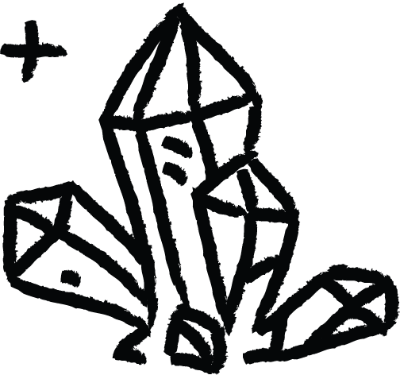
> whether you hold earthly wants or otherworldly desires, feast your hungry eyes upon artefacts seldom seen!

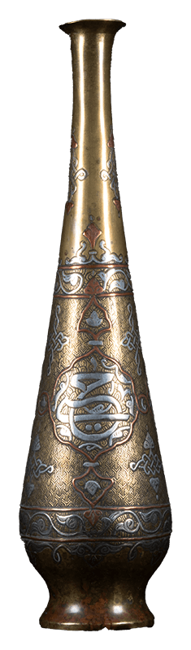
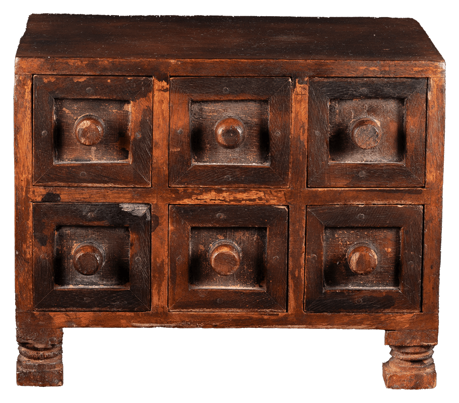
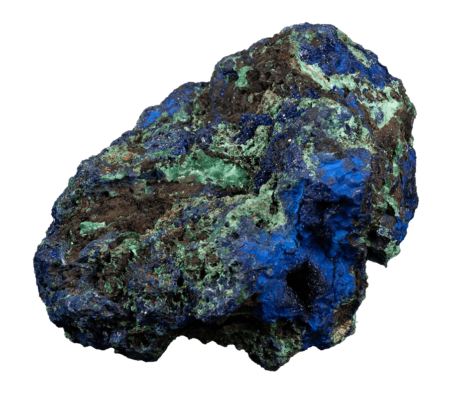
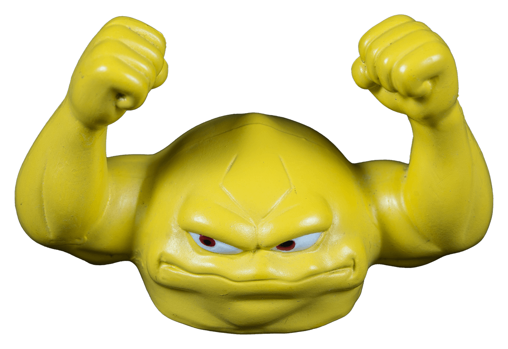
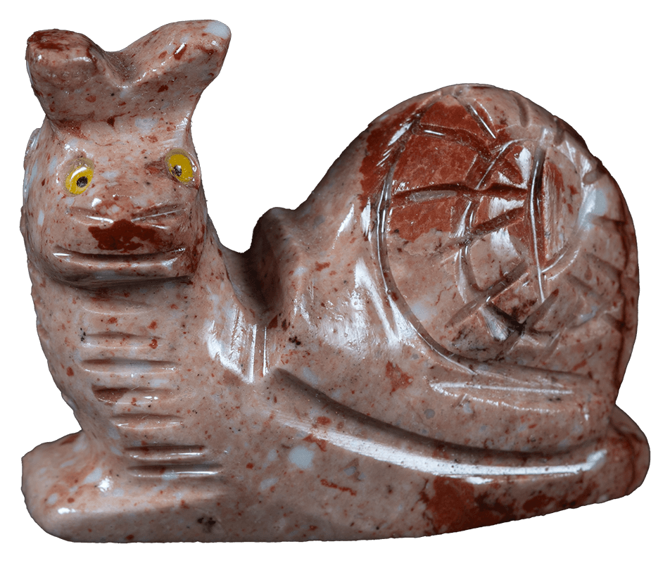
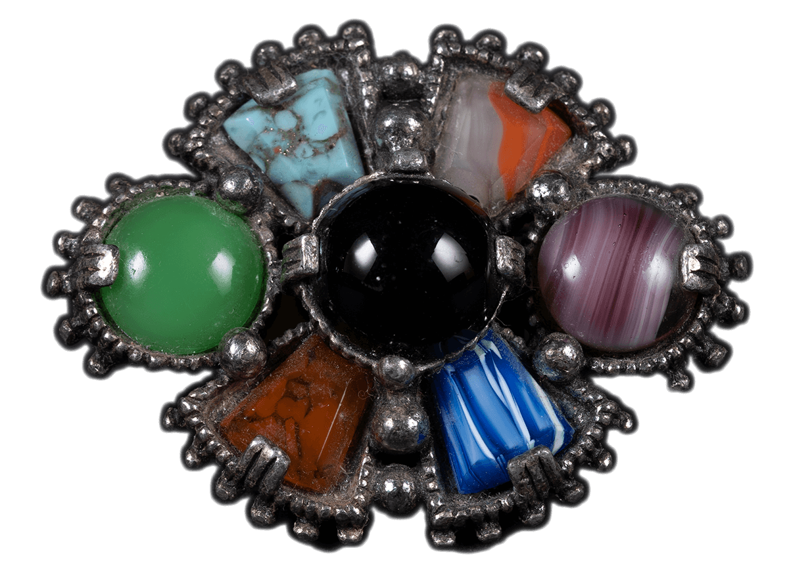
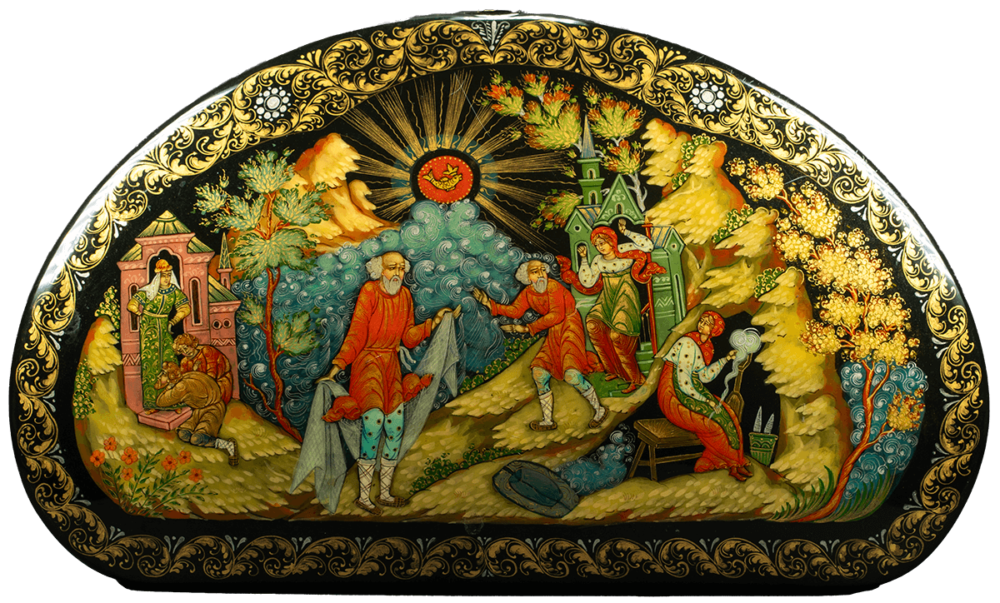
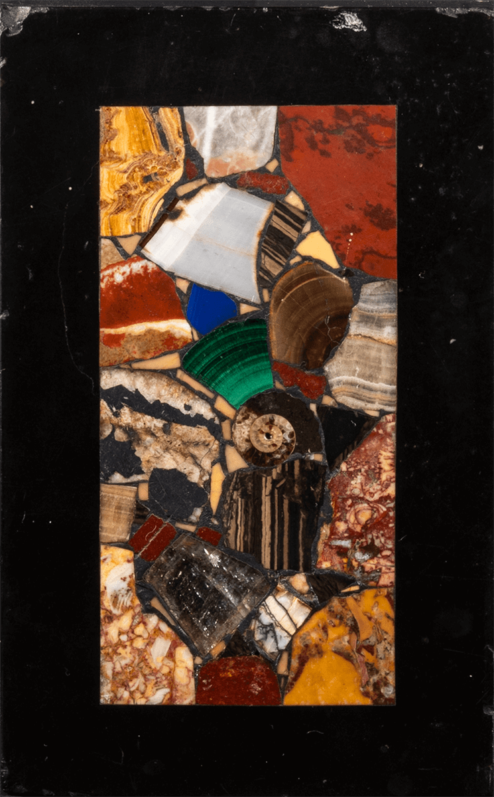
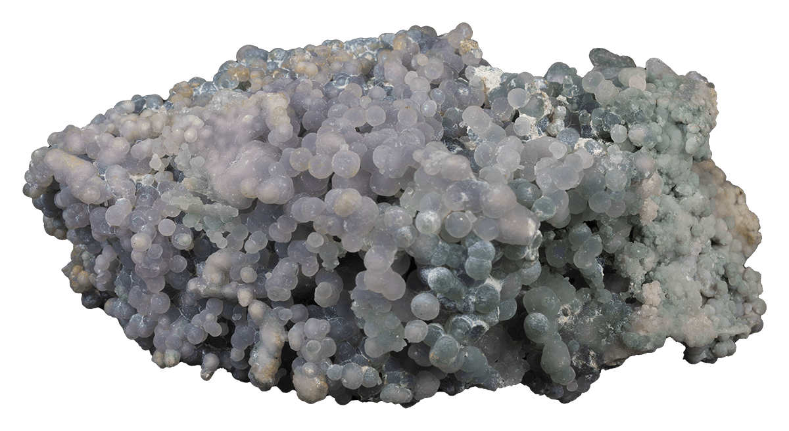
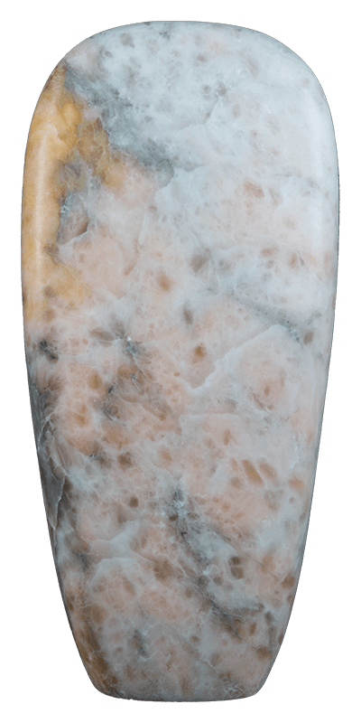
select an item to view info
---
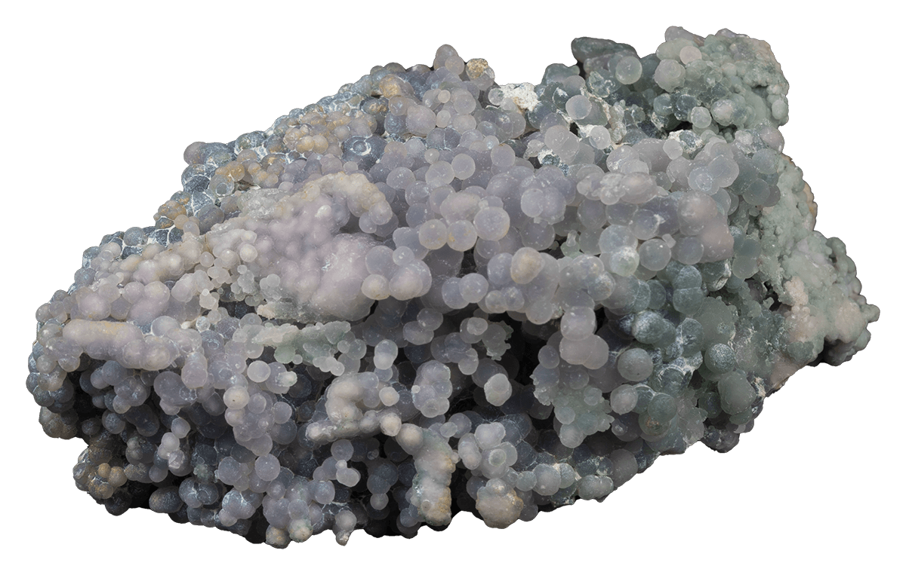
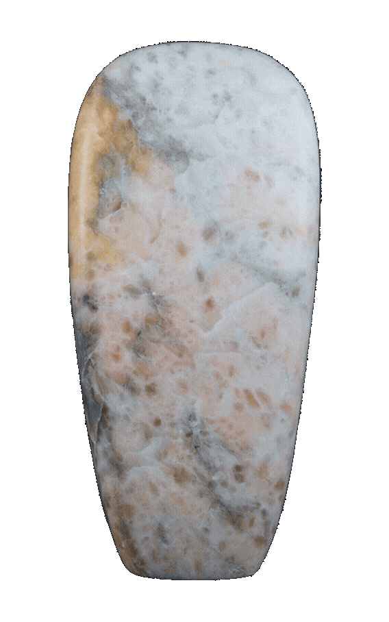
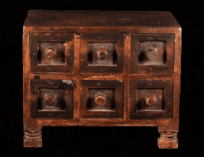
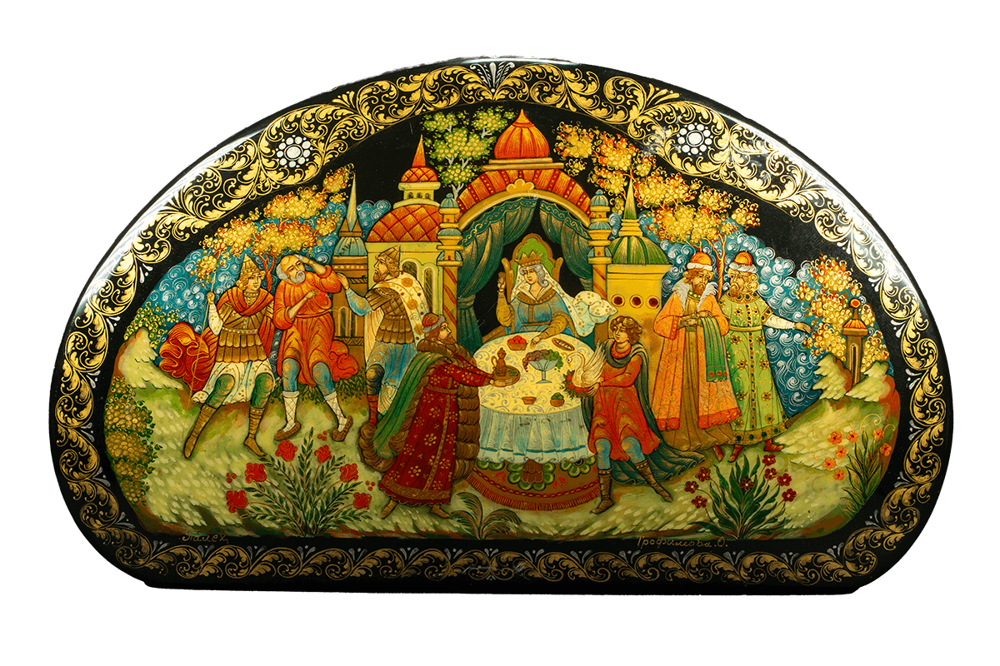
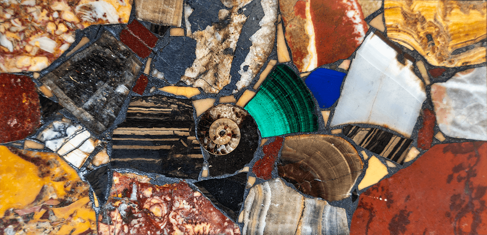